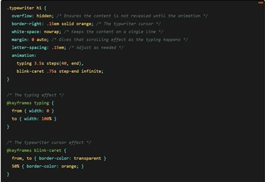

There are many uses of CSS and after some research I found some cool uses using some things we have covered in class already. One example is the typewriter effect which makes it feel and look like your text is being written on a typewriter by pushing it to the left as you write it. This is done using a flexbox which we have recently learned how to use.
